1. Fekvőtámasz
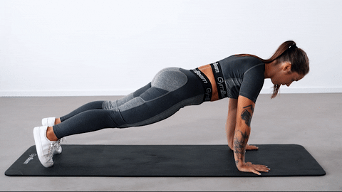Kiindulási testhelyzet: Térdelj le, és plankolj nyújtott karokkal. A tenyereid a válladdal egy vonalban legyenek, de vállszélességnél közelebb egymáshoz. Nyomd le a vállaidat minél távolabb a füledtől, és a lapockáidat is le és hátra. A könyök 45°-os szöget zárjon be a testeddel. Feszítsd meg a törzset, és tartsd egyenesen a tested. A hát ne görbüljön, különösen a lumbális szakaszon.
Hogyan csináld: Kilégzés közben ereszkedj le és finoman érintsd a mellkasod a padlóhoz. Belégzés közben nyomd a tenyered az edzőszőnyegbe és told vissza a tested a kiinduló helyzetbe. Ismételd.
📝 Jegyzet ehhez a gyakorlathoz
2. Plank
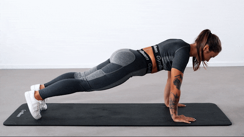Kiindulási testhelyzet: Térdelj le, és plankolj nyújtott karokkal. A tenyereid a válladdal egy vonalban legyenek, de vállszélességnél közelebb egymáshoz…
Hogyan csináld: Lélegezz nyugodtan, tartsd mozdulatlanul a tested, és próbáld tartani ezt a pozíciót néhány másodpercig.
📝 Jegyzet ehhez a gyakorlathoz
3. Híd (Glute bridge)
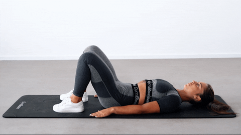Kiindulási testhelyzet: Feküdj a hátadra, karok a test mellett, tenyérrel lefelé. Hajlítsd be a térded, a talpak a talajon.
Hogyan csináld: Emeld a medencét a farizom megfeszítésével, tartsd 1–2 mp-ig, majd lassan engedd vissza. Ismételd.
📝 Jegyzet ehhez a gyakorlathoz
4. Pók kitörés (Spider lunges)
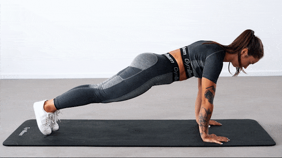Kiindulási testhelyzet: Térdelj le, és plankolj nyújtott karokkal…
Hogyan csináld: Kifújás közben lépj előre a jobb lábaddal (ideális esetben a jobb tenyérig), majd belégzésre lépj vissza. Ismételd a másik oldalra.
📝 Jegyzet ehhez a gyakorlathoz
5. Plank vállérintéssel (Plank shoulder touch)
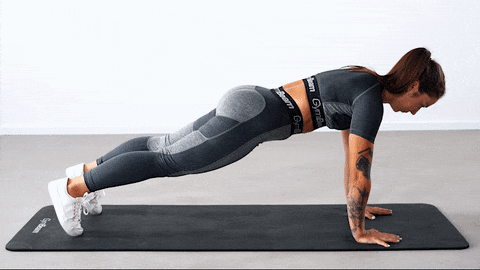Kiindulási testhelyzet: Plank nyújtott karokkal, a vállak leengedve, lapockák hátrahúzva…
Hogyan csináld: Emeld fel a jobb kezed és érintsd a bal vállad, majd csere. Közben tartsd stabilan a törzsed.
📝 Jegyzet ehhez a gyakorlathoz
6. Guggolás
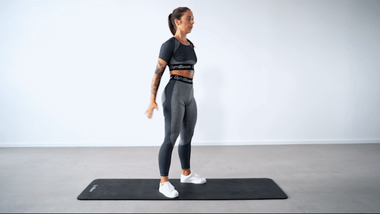Kezdő pozíció: Vállszéles terpesz. A testsúly a teljes talpadon oszlik el.
Hogyan csináld: Belégzésre guggolj le (medence hátra-le), tartsd a hátad, térd-boka-lábfej egy vonalban; kilégzésre állj fel. Ismételd.
📝 Jegyzet ehhez a gyakorlathoz
7. Oldalra kitörés (Side lunge)
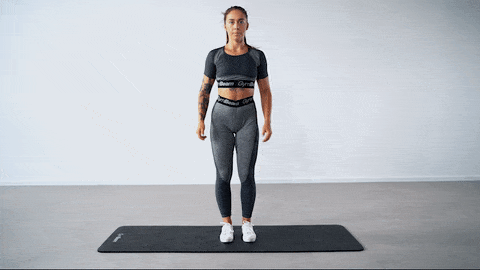Kiindulási pozíció: Közepes terpesz.
Hogyan csináld: Belégzésre lépj oldalra és terheld az adott lábat; kilégzésre térj vissza. Ismételd másik oldalra.
📝 Jegyzet ehhez a gyakorlathoz
8. Guggolás ugrással (Squat jump)
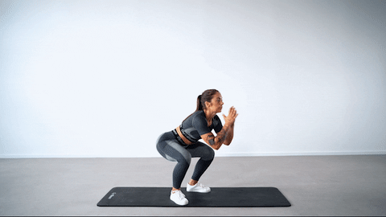Kezdő pozíció: Vállszéles terpesz.
Hogyan csináld: Belégzésre guggolj, kilégzésre ugorj fel a far- és elülső combizmok megfeszítésével; fent levegő, majd vissza a guggolásba.
📝 Jegyzet ehhez a gyakorlathoz
9. Kitörés ugrással
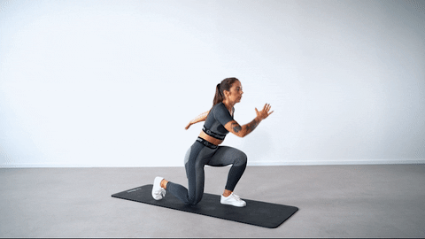Kiindulási pozíció: Közepes terpesz.
Hogyan csináld: Lépj előre, ereszkedj le 90°-ig, majd kilégzésre ugorj és cserélj lábat. Karokkal segíthetsz a stabilitásban.
📝 Jegyzet ehhez a gyakorlathoz
10. Felhúzás egy lábon (Single leg deadlift)
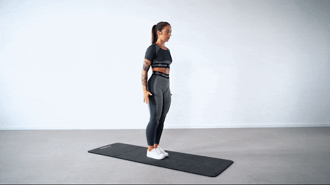Kiindulási pozíció: Közepes terpesz.
Hogyan csináld: Testsúly az enyhén hajlított támaszlábban; belégzésre dőlj előre és nyújtsd hátra a másik lábat; kilégzésre térj vissza. Karokkal egyensúlyozz.
📝 Jegyzet ehhez a gyakorlathoz
11. Kitörés hátrafelé
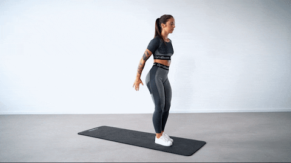Kiindulási pozíció: Közepes terpesz.
Gyakorlat: Lépj hátra és belégzés közben ereszkedj le, a hátsó térd finoman érintse a talajt; kilégzésre vissza. Ismételd másik lábbal is.
📝 Jegyzet ehhez a gyakorlathoz
12. Walkout
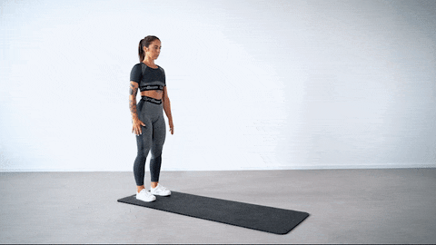Kiindulási pozíció: Közepes terpesz.
Gyakorlat: Belégzésre hajolj előre és sétálj ki plankig, toltd el magad és térj vissza a kiinduló helyzetbe. Egyenesíts és ismételd.
📝 Jegyzet ehhez a gyakorlathoz
Kiegészítés: Edzésprogramok
1. Saját testsúlyos HIIT a jobb fizikai erőnlétért
Protokoll: 30 mp mozgás + 30 mp pihenő, 3–5 kör, körök között 60–90 mp pihenő.
- Walkout
- Guggolás ugrással
- Plank vállérintéssel
- Pók kitörés
- Kitörés ugrással
2. Teljes testet átfogó saját testsúlyos edzés
Előbb egy gyakorlat összes sorozata, majd a következő. Pihenő 1–2 perc.
| Gyakorlat | Ismétlés | Sorozat |
|---|---|---|
| Walkout | 5–10 | 3–5 |
| Guggolás ugrással | 8–12 | 3–5 |
| Kitörés hátrafelé | 10–12/láb | 3–5 |
| Fekvőtámasz | 8–12 | 3–5 |
| Plank | 30–60 mp | 3–5 |
| Pók kitörés | 8–12/láb | 3–5 |
3. Saját testsúlyos gyakorlatok lábra és popsira
Előbb egy gyakorlat összes sorozata, majd a következő. Pihenő 1–2 perc.
| Gyakorlat | Ismétlés | Sorozat |
|---|---|---|
| Híd (Glute bridge) | 12–20 | 3–5 |
| Felhúzás egy lábon | 8–12/láb | 3–5 |
| Váltott kitörés ugrással | 12–16 | 3–5 |
| Guggolás | 12–20 | 3–5 |
| Váltakozó oldalirányú kitörés | 12–20 | 3–5 |
📝 Jegyzet ehhez a kiegészítéshez
Tipp: a képekre vagy kártyára kattintva nagy nézet nyílik (nyilak, ←/→ és swipe). A videók csak látható állapotban futnak.